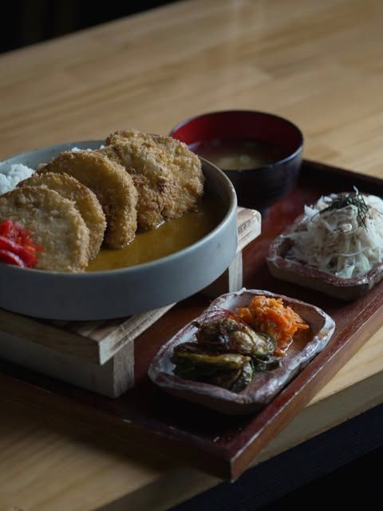
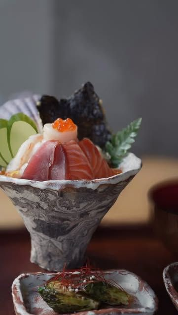
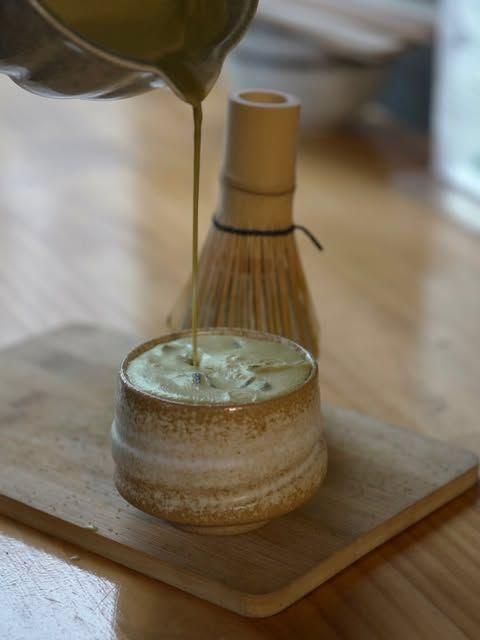
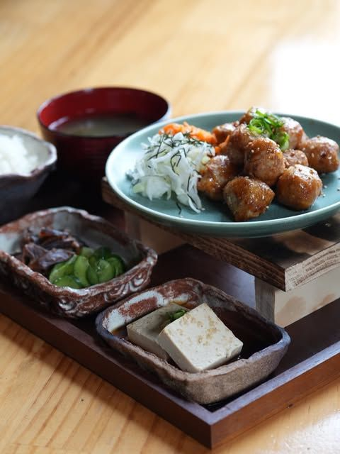
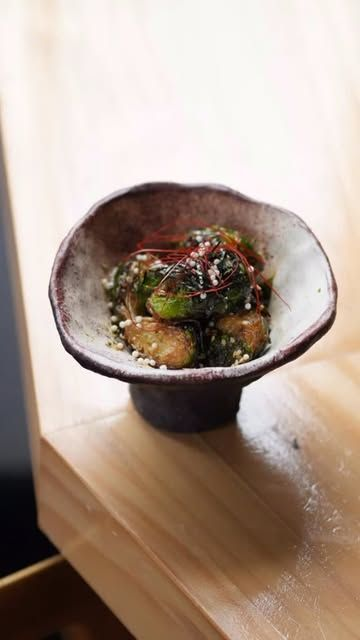
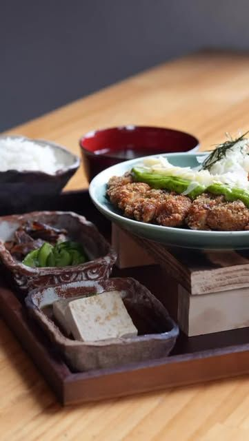
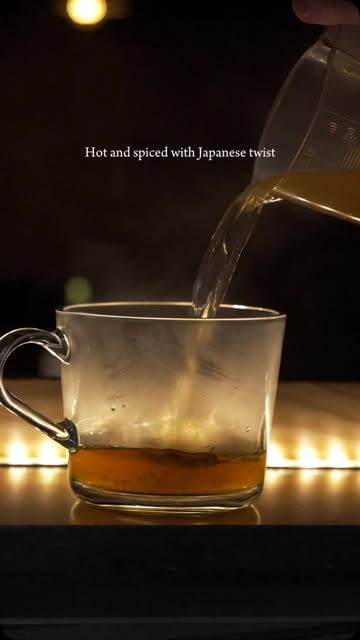
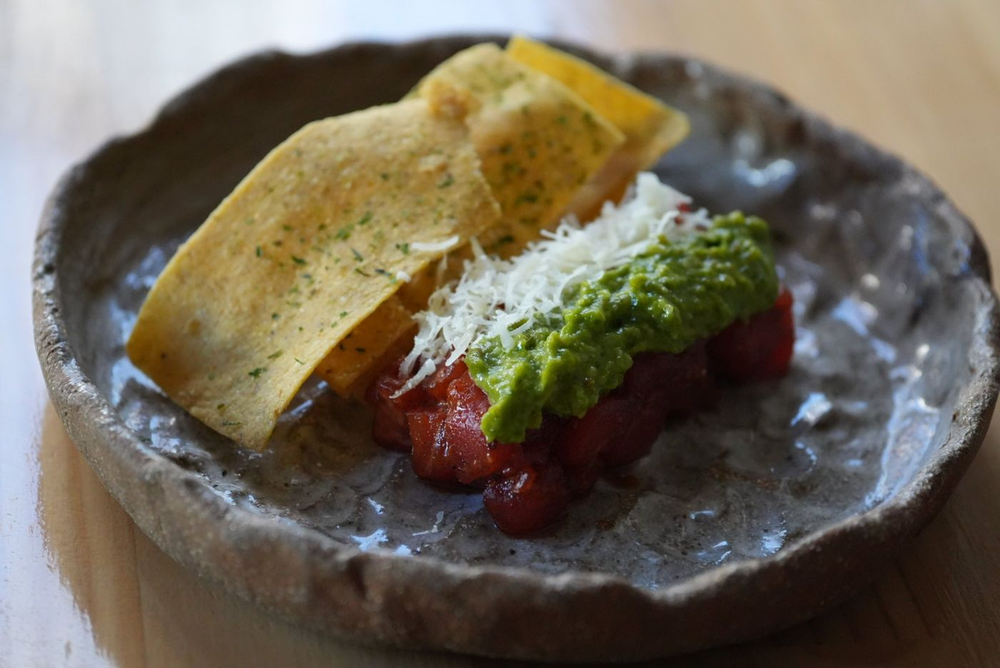
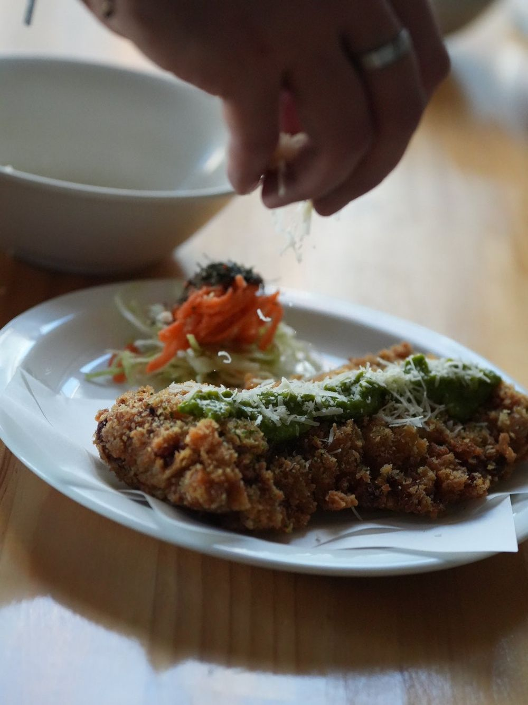

Japanese fusion · King St, Newtown
The Japanese food you love, and the Japanese food you never knew about.
--:-- Sydney time
Happy hour every day 5:30pm–6:30pm & lunch. Great drinks. Good vibes.







Photos from Shinmachi’s Instagram, @shinmachinewtown
Ramen
Build your bowl.
1. Choose a ramen
2. Add extras

About us
It’s our pleasure to serve you the food of Shinmachi.
Shinmachi is a restaurant at the heart of Newtown in Sydney, serving Japanese fusion food. We are just 5-mins walk from the train station.
Our food is made with the highest degree of care and creativity. At Shinmachi, you will find the Japanese food you love and the Japanese food you never knew about.
Our chefs pride themselves on their professionalism, creating dishes with beauty in taste and form.
That’s not to say that we’re a ‘fine-dining’ establishment though. We serve artisan food, but in an environment that welcomes everyone. From the moment you step into our restaurant, you will notice our love of art, music and creative pursuits.

Visit
See you at Shinmachi.
1/239 King St, Newtown,
New South Wales
5-mins walk from the train station
Go to booking page ↗Weekend (10%). Thank you for your understanding!